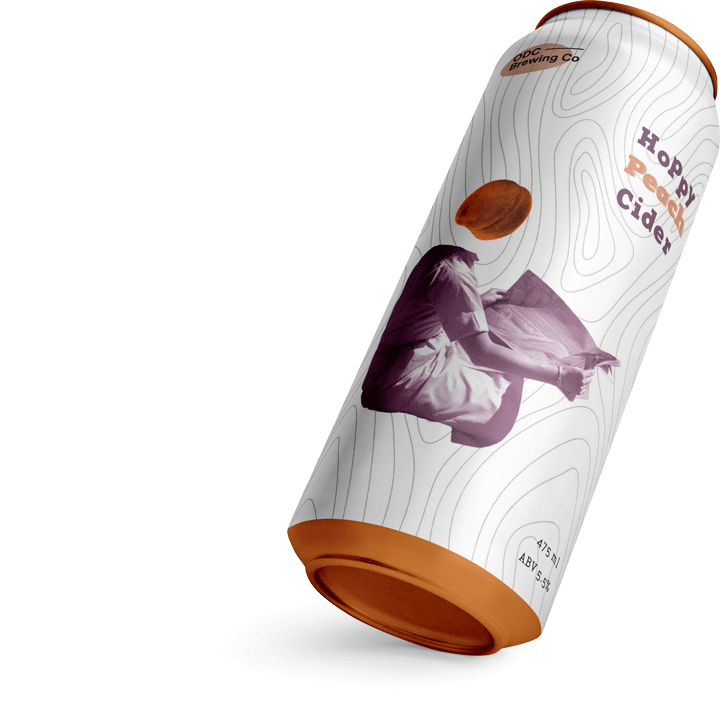
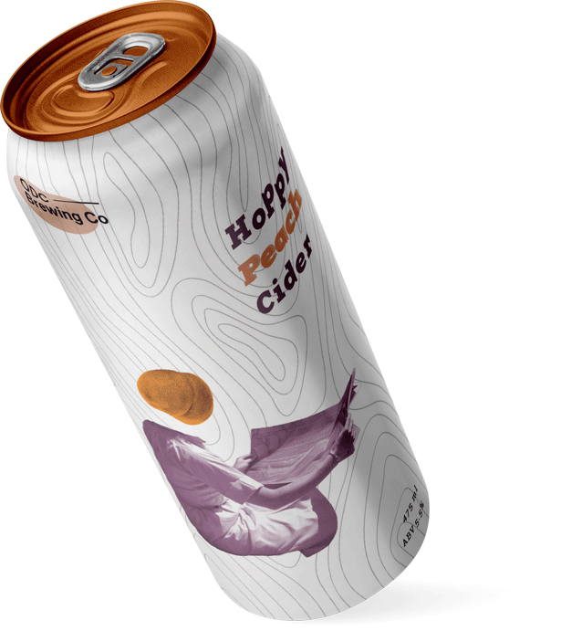

Peachy Cider
This is a personal project that was done at the social design hour hosted by @ottdesignclub.
I have created the cider packaging that represents peachy taste with the feeling of vintage nostalgia and the excitement of forthcoming fall season.
The font used in the project called Base 12 Serif Pro is an Adobe font.
An asset for the background texture was kindly provided by @ottdesignclub alongside with fictional logo for the brewery, the cans mockups and a mood board for inspiration.
